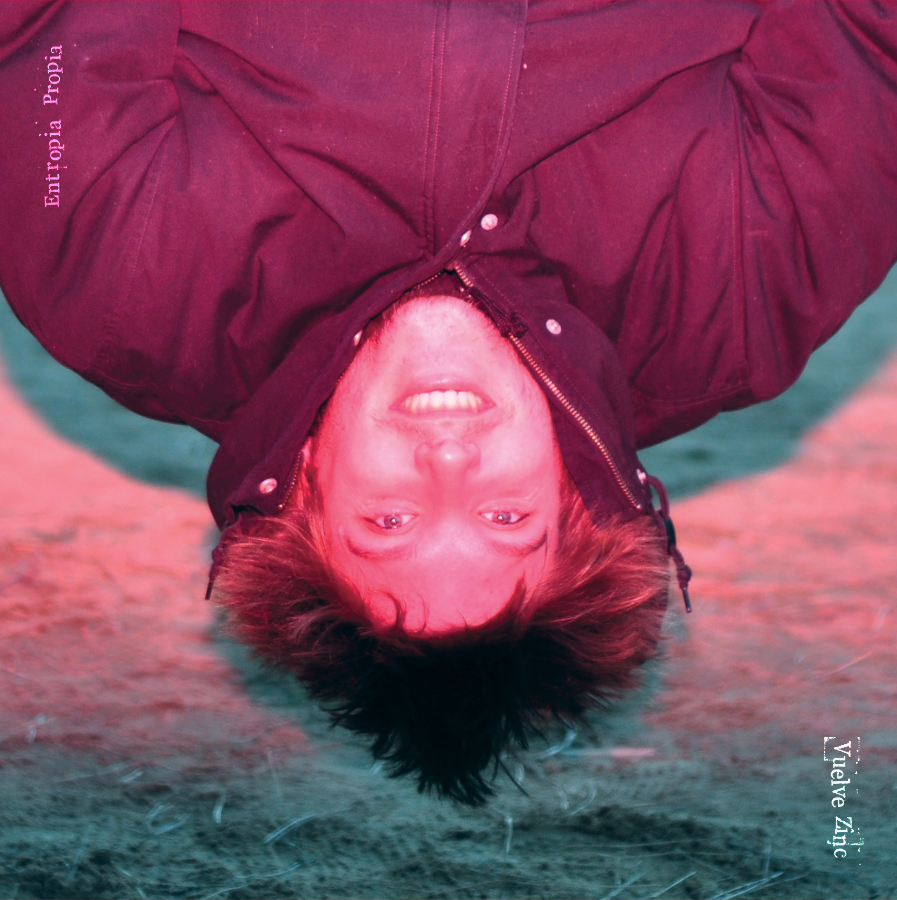

Sobre Nosotros
Bio

Vuelve Zinc nace en Barcelona a inicios de 2016, fruto del encuentro de Chisco y Pol vía redes sociales. Con el objetivo de dar salida a una serie de inquietudes y motivaciones, nace el proyecto en formato dúo; con una marcada idea de guitarras y sintes loopeados, junto a baterías y beats generados. Siendo claras influencias artistas como: Radiohead, Jeff Buckley, John Frusciante, The Notwist, Portishead, Blonde Redhead, PJ Harvey y Pearl Jam. Se abre en ese momento un periodo de tanteo y experimentación entre los dos miembros y la música.
A principios de 2017 el grupo ya lleva compuestos varios temas que son clasificados en dos vertientes: la más orientada a la idea inicial y la más centrada a explorar ese sonido indie y más contundente. Dicha división se concreta en dos EP’s: “Un Mundo Sin Zinc” y “Un Mundo Con Zinc”, siendo publicados con 6 meses de diferencia.
Meses después, se empieza a componer el disco debut de la formación. Un álbum que termina hablando de temas como: el aprendizaje continuo como personas, el crecimiento y el autodescubrimiento, los claros y los oscuros en nuestro interior y todas esas actitudes que repetimos en “loop” a lo largo de nuestra vida. Siendo las canciones parte de un contexto de comprensión personal, y que pertenecen a la mezcla de varios momentos: el ahora y el antes vistos desde la actualidad. Junto a este planteamiento temático confluye la idea del leitmotiv que se deja entrever en los loops y las estructuras de las canciones. A finales de ese mismo año se empieza a grabar el LP en el estudio Caballo Grande, en Barcelona. El disco es producido y mezclado por Ferran Resines y Cristian Pallejá, los cuales aportan una personalidad y unas características imprescindibles a la hora de definir su sonido. Así, de esta manera nace el primer larga duración de la banda, con el título "Entropía Propia".